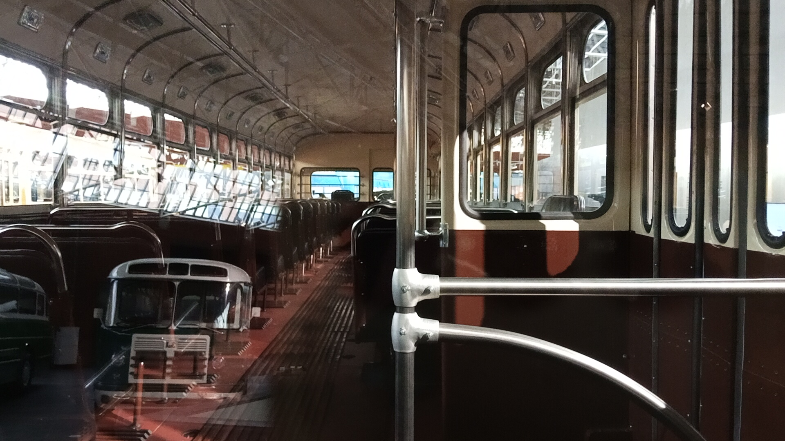
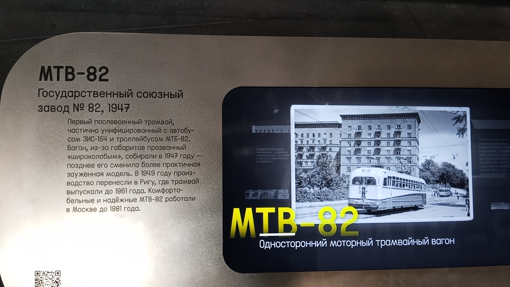

МТВ-82 № 1075 (Реплика)
Перед вами музейный экспонат — реплика вагона МТВ-82 первой («широколобой») серии. До наших дней не сохранилось ни одного оригинального вагона этой модификации, поэтому этот экземпляр был полностью воссоздан.
Сам вагон был построен в 1950 году (заводской № 47), долгое время работал в Москве, а затем использовался как буксир. В 2022–2026 годах на фирме «ДизЭТ» (г. Иваново) из него собрали реплику, используя переднюю и заднюю части от троллейбуса МТБ-82Д № 1975.
Общая информация
🏭 Производство
Завод-изготовитель шасси: Тушинский завод № 82
Год постройки: 1950
Заводской №: 47
Тип: Реплика (перестроен в 2022–2026 гг.)
📍 Музейный статус
Местонахождение: Музей Транспорта Москвы
Состояние: Не эксплуатируется (музейный экспонат)
Дата доставки: 13 мая 2026 года
История экспоната
Постройка
Вагон (заводской № 47) построен на заводе № 82. Первоначально эксплуатировался в Октябрьском депо.
Перевод в депо им. Кирова
Передан в депо имени Кирова, где работал до 1976 года.
Списание и работа буксиром
Официально списан, но утилизирован не был. Стал использоваться на ТРЗ (Трамвайно-ремонтном заводе) в качестве буксира.
Капитальный ремонт
Прошёл КР на ТРЗ с оборудованием изолированного грузового отсека в задней части салона.
Вывод из эксплуатации
Списан из-за поломки тягового электродвигателя ДК-255 и отказа завода «СВАРЗ» от его ремонта.
Реставрация / Пересборка
Проходил реставрацию в фирме «ДизЭТ» (Иваново). С использованием передней и задней частей троллейбуса МТБ-82Д №1975 был перестроен в реплику вагона МТВ-82 первой серии.
Возвращение в Москву
Перевезён из Иваново на ТРЗ для пусконаладочных работ и ходовых испытаний.
Музейный экспонат
Перевезён в экспозиционный комплекс Музея транспорта Москвы на Новорязанской улице, 27.
Особенности конструкции
«Широколобый» дизайн
Первая модификация получила прозвище «широколобый» из-за своих габаритов. Кузов имел обтекаемую форму, лобовая панель — ступенчатую окраску. Вагон был двухдверным, с пневматическим приводом дверей.
Комфорт для пассажиров
Вместо деревянных скамеек — мягкие диваны с кожаной обивкой. Салон отапливался 12 электропечами, освещался 15 плафонами. Впервые появилась полностью отделённая отапливаемая кабина водителя.
Технические решения
Частичная унификация с троллейбусом МТБ-82М и автобусом ЗИС-154. Ходовые тележки 2ДСБ, тяговые электродвигатели ДК-255. Конструкционная скорость 55 км/ч. Масса — 17,5 т.
Создание реплики
Это единственный сохранившийся экземпляр, который представляет собой точную копию первой серии, но собран из оригинальных деталей разных машин (включая троллейбус МТБ-82Д).
Фотогалерея

Общий вид экспоната.

Вид вперед.

Музейная информация.
Нажмите на фото для увеличения
«МТВ-82 был гораздо комфортабельнее уже архаичных „деревянных“ вагонов и стал настоящим прорывом для своего времени. Пассажиры ценили его за удобство, вагоновожатые — за комфорт и простоту, а ремонтники — за надёжность».